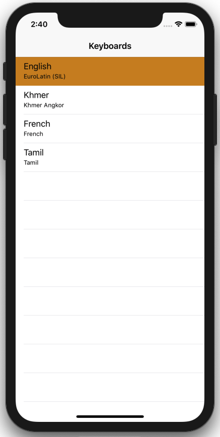
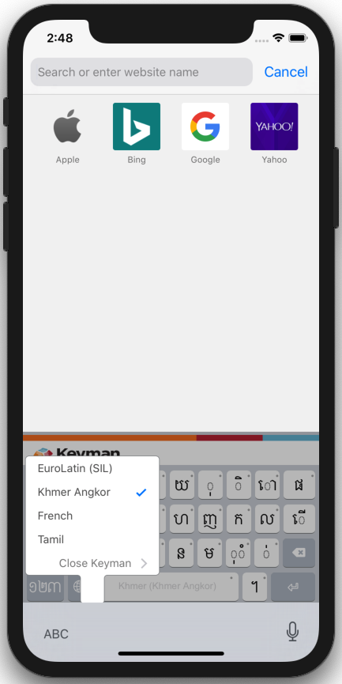

Keyman for iPhone and iPad: Switching between Keyboards
Keyboard switching is always activated by using the following key:

This will bring up a list of all currently installed languages (the default is English USA). If you have already downloaded additional languages, they will appear here. Simply select them and the keyboard will re-appear with the new language.
The In-App Menu

Simply select any keyboard to activate it and return to the previous screen.
The System Keyboard Menu

This menu only displays when the 'globe' key is touched and held.
The "Close Keyman" option will activate the next available non-Keyman system keyboard.
A quick tap on the "globe" key will instead transition to the next available installed keyboard without displaying the menu.